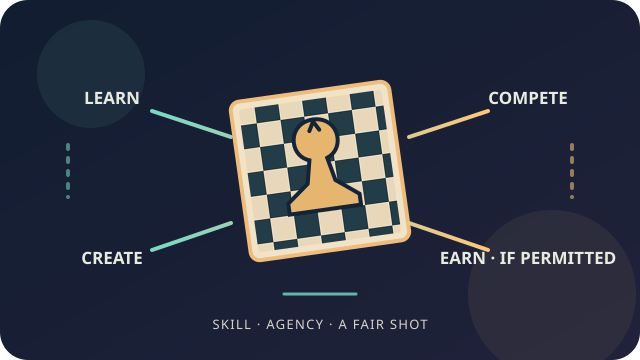

Chess belongs to everyone
Offer boards, instruction, and a patient place to learn without an entry fee, a camera, or a personal story as the price of admission.
A proposed public-interest concept · Chess access & fair earning
In development · no program or partnerships launchedPut the board within reach. Help players build skill, compete, create, and—where the rules permit—earn fairly from work they choose to share.

THE MISSION
Offer boards, instruction, and a patient place to learn without an entry fee, a camera, or a personal story as the price of admission.
Incarcerated and formerly incarcerated chess players help design the program, set goals, choose what to share, and review whether it serves them.
Ask before recording. Agree in writing before publishing or licensing. State payment terms up front. A player can decline public exposure and still belong.
Track instruction, competition, skills, opportunities offered, and compensation actually received where permitted. Do not claim chess guarantees income, release, or rehabilitation outcomes.
A PRACTICAL PATH
Begin with players and credible prison-chess groups. Pay formerly incarcerated advisers for their expertise. Ask incarcerated advisers what participation rules permit before proposing compensation or media work.
Provide durable boards, beginner lessons, peer teaching, and regular tournaments through the institution’s approved channels. Competition is available whether or not anyone wants to be a public chess personality.
Where an institution expressly approves a paid tournament, teaching, or creative-work arrangement, document who pays, how funds are handled, what rights are licensed, and how a player may say no. If paid media or business activity is prohibited, do not route around that rule.
With the player’s consent, build a bridge to clubs, tournaments, coaching, commentary, writing, or a creator channel after release—through partners prepared to offer real opportunities, not vague exposure.
Creators choose their names, images, and work. Use plain-language agreements and an auditable record of revenue, fees, and payment. No trauma-for-views deals and no surprise use of a person’s story.
WHAT EXISTS ALREADY
FIDE’s Chess for Freedom has run international prison chess championships, including its sixth event in October 2026. California’s Department of Corrections documented a San Quentin tournament that brought incarcerated residents and staff to the same tables. Those are examples of chess access and competition. This proposal’s additional focus is a carefully approved route from chess skill to legitimate earning.
One federal institution handbook published by the Bureau of Prisons says people in its custody may not receive compensation for media correspondence, publish under a byline, or conduct a business or profession while in custody. That is a specific federal example, not a rule we should generalize to every facility. The practical lesson is to check each institution’s current rules before designing a paid activity.
STATUS & NEXT STEP
No institution, nonprofit, federation, sponsor, or funding source has committed to this concept. Before any real pilot, the work would need paid co-design, an interested facility, authorized chess partners, a lawful compensation and rights model, and a small, measurable plan shaped with the people it intends to serve.